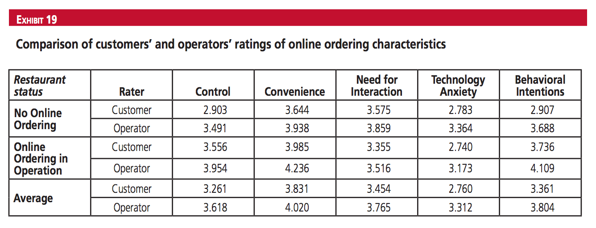

Data & Visualization
Our dataset was gathered from Cornell University Scholarly Commons. View it here. These infographics were created from the scholarly article.
This dataset is a collection of average ratings collected from 372 operators, owners, or managers of restaurants and 470 customers who have used online ordering through surveys conducted in 2011. Both groups were asked to rate their perceived control, perceived convenience, need for interaction, technology anxiety, satisfaction, and intent to use the self-service technology or recommend it to others
(Kimes).
For customers, the graph indicates that there is higher perceived control, convenience, and intent to use the technology. Customers find less need for interaction when using an online ordering system, and technology anxiety remains about the same. Operators also perceived increased control, convenience, and behavioral intent. Just like customers, operators have less perceived need for interaction. However, operators found a decrease in perceived technology anxiety.
From this dataset, we separated the values given by the operators and consumers and produced a graph comparing each group’s response to ordering with and without an online ordering system.
The graph below shows the effects of online ordering on order volume and service. Based on the results of the surveys, about a third (29.1%) reported an increase in order volume, 26.8 percent said that their service had improved, and another 32.3 percent indicated that they had experienced both increased sales volume and increased service
(Kimes). This means that the majority of businesses found that online ordering improved business, customer satisfaction, or both.
Through the datasets and visualizations, we found that incorporating an online ordering system increases the quality of service that increases customer satisfaction and improves business to restaurant operators or owners. Both customers and owners find more control, convenience, and desire to use the technology with the existence of online ordering. Restaurant operators also find increase in order volume and/or service.
The Point of Sale system, or POS system is a commonly used system that restaurants use, especially in restaurants that provide online ordering. The system is used for clocking in and clocking out for employees, and it can act as a payroll system to a restaurant’s workers. A POS system tracks orders, inventory items, and take card payments from customers. These images show examples of how a POS system works and looks like when tracking inventory, displaying store layout, linking to Paypal, showing menu items, and giving daily reports.
Works Cited
Kimes, Sheryl E. “The Current State of Online Food Ordering in the U.S. Restaurant Industry.” Cornell Hospitality Report, 2011: 6-18. Accessed 11 June 2017. http://scholarship.sha.cornell.edu/cgi/viewcontent.cgi?article=1072&context=chrpubs>.